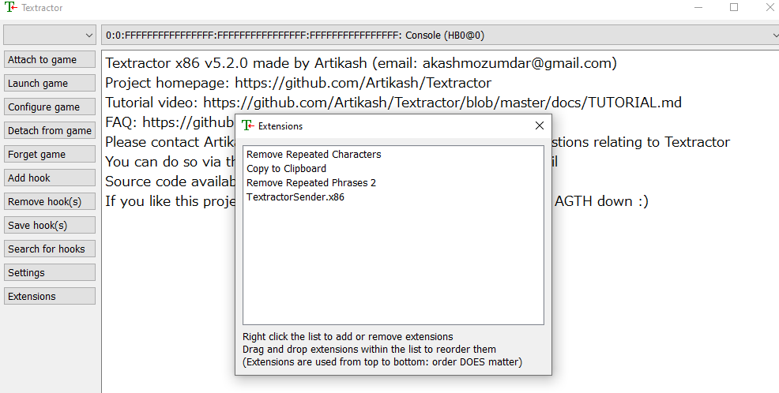

Kappale 5 Videopelit (erityisesti visuaaliset novellit)
Videopelit ovat yksi parhaimmista mediamuodoista, jota voi käyttää kielten opiskeluun. Jos löydät pelin, johon saa tekstitykset päälle, pystyt käytännössä louhimaan siitä samalla tavalla sanoja/lauseita kuin muistakin videomuodoista.
Erityisesti japanin opiskelussa ns. visual novel -tyyppiset videopelit ovat äärimmäisen tehokas immersiomateriaali, sillä ne nimensä mukaan ovat käytännössä kuvitettuja kirjoja, jotka hyvin usein vielä ovat ääninäyteltyjä. Visual novelleja on myös tuhansittain tarjolla, joten ne eivät tule loppumaan nopeasti kesken. Myös korealaisia ja kiinalaisia visual novelleja on paljon, jos niiden opiskelu kiinnostaa. Muiden kielien opiskelu saaattaa videopelien kautta olla aika vaikeaa, sillä useimmiten ainoat ääniraidat tarjolla ovat pelistä riippuen vain englanniksi.
Ongelmana on kuitenkin se, että videopelien teksti ei ole suoraan tutkittavissa Yomitanilla (toimii vain browserissa) eikä asbplayer tunnista videopelejä videotiedostoina. Jos haluaakin louhia videopeleistä, tulee lataa taas muutama työkalu.
5.1 Työkalujen lataaminen
Ensimmäinen vaihe on hankkia texthooker, jonka avulla voidaan repiä näytöllä näkyvä teksti browseriin Yomitanin nähtäväksi.
Näitä on monia, mutta tässä oppaassa käsitellään Textractorin käyttö; lataa Textractor täältä:
Asenna Textractor; x86 toiminee suurimman osan kanssa, jos x86 ei toimi pelisi kanssa, kokeile x64-versiota
Asenna exSTATic ja TextractorSender: https://github.com/KamWithK/exSTATic; samalla sivulla myös opetusvideo näiden asentamisesta
Asenna ShareX, jos haluat pelistä revityn audion ja kuvan kortteihisi: https://getsharex.com/
5.2 Textractorin setup
Extensions-kohdasta poista kaikki paitsi Remove repeated characters, Copy to Clipboard ja Remove repeated phrases. Lisää myös Textractorsender (joko x86 tai x64 riippuen kumpaa textractoria käytät; yleensä x86 toimii paremmin) exSTATic-kohdan ohjeiden mukaan.
- Jos Extensions-kohta on tyhjä, lisää sinne ym. tarvittavat extensionit

5.4 Workflow
Avaa Anki
Avaa Textractor (x86 toimii useimmiten)
Avaa ShareX
Avaa exSTATic:n pääsivu: https://kamwithk.github.io/exSTATic/tracker.html
Avaa pelisi (toimii parhaiten visual novellien kanssa)
Kiinnitä Textractor peliin: Attach to game -> valitse avattu peli (voit myös tallentaa hookin, jotta tulevaisuudessa hookaus on automaattinen kyseisen pelin kanssa)
Plärää muutama linja pelin tekstejä läpi ja etsi ylävalikosta se vaihtoehto, jossa löytyy juuri pelissä näkyneet tekstit (jos japania opiskellessa näkyy pelkkejä bokseja, right-clickaa bokseja ja vaihda niiden fontti Meiryo-fontiksi)
Tavatessassi tuntemattoman sanan, mene exSTATic:n pääsivulle, jonne Textratorin repimää tekstiä syötetään ja louhi sana Yomitanilla
Jos haluat ottaa kyseisestä kohdasta peliä kuvan korttiin, niin paina Shift+Alt+C, jolloin ShareX avaa snipping tool -tyyppisen kuvankaappaustyökalun -> rajaa haluamasi kuva tällä -> päivittää automaattisesti juuri tehdyn Anki-kortin
Jos haluat (ja se on mahdollista), niin paina Shift+Alt+A, jolloin ShareX alkaa tallentamaan ääntä Anki-korttiin. Soita juuri puhuttu repliikki uudestaan ja lopeta audion tallentaminen.
Korttisi on valmis

Sanojen louhinta näillä työkaluilla on todella helppoa. Yleisiä ongelmakohtia kuitenkin ovat:
Huonot hookit Textractorin kautta, jolloin kerätyt lauseet ovat virheellisiä.
Pelit, joissa ei pysty palata taaksepäin, jolloin audiota ei saa soimaan uudestaan (ei pysty tallentamaan audioklippiä ankikorttiin); tällöin kortissa on vain Yomitan-sanakirjasi natiiviaudio + klippaamasi kuvankaappaus pelistä